W
Báo cáo dự án · 10/2026
AI Workforce
Công ty vận hành bằng nhân sự AI
CEO AI nhận yêu cầu, lập kế hoạch, giao việc cho 8 agent ở 3 phòng ban, tự review rồi chờ con người duyệt. Xây trên n8n, PostgreSQL và Gemini, chạy local bằng Docker.
Tổng quan
Từ một câu yêu cầu đến sản phẩm đã được duyệt
Hệ thống chia một yêu cầu tiếng Việt thành kế hoạch nhiều bước, chạy song song trên các agent chuyên môn và giữ mọi trạng thái trong database, nên chịu được restart, F5 và lỗi giữa chừng.
Ví dụ đã chạy thật
"Xem video YouTube này, viết bài LinkedIn cho quản lý không chuyên kỹ thuật, chuyển thành kịch bản video ngắn và làm ảnh minh hoạ."
CEO lập kế hoạch→
YouTube-to-LinkedIn→
Repurpose Studio ‖ Visual Design (song song)→
CEO review→
Người duyệt
Khoảng 5 phút, có một lần retry tự động khi Gemini trả về rỗng.
Quy mô
Những gì đã xây
16
workflow n8n, sinh từ code~6.900
dòng code (không tính file sinh)
| Lớp | Công nghệ |
|---|
| Điều phối | n8n 2.42.6, node AI Agent |
| AI | Gemini 3.5 Flash Lite + dự phòng 3.1 |
| Database | PostgreSQL 16 |
| Frontend | Node.js 22 + HTML/CSS/JS thuần |
| Vẽ ảnh | rough.js + resvg |
| Hạ tầng | Docker Compose, local |
| Thư mục | File | Dòng |
|---|
workflows/ | 22 | 2.314 |
db/ | 12 | 1.941 |
dashboard/ | 7 | 1.908 |
tests/ | 8 | 373 |
renderer/ | 3 | 217 |
scripts/ | 4 | 151 |
Kiến trúc
n8n điều phối, PostgreSQL giữ toàn bộ trạng thái
Luồng xử lý
Mỗi yêu cầu qua CEO hai lần, chỉ xong khi người duyệt
- Kế hoạch sai được lưu với lý do và không chạy gì.
- Dispatcher được đánh thức sau mỗi task; việc độc lập chạy song song.
- Lỗi tạm thời tự thử lại, backoff 20 giây × số lần thử.
- CEO review có thể tạo task sửa, số vòng có giới hạn.
- Chỉ con người mới chuyển kế hoạch sang
completed.
Backend · Database
PostgreSQL là nguồn sự thật duy nhất
Mọi chuyển trạng thái đi qua hàm SQL; dashboard chỉ có một cửa wf.api(action, args), lỗi trả về dưới dạng dữ liệu (400 / 404 / 409).
| Nhóm bảng | Lưu gì |
|---|
| Tổ chức | phòng ban, agent, skill |
| Công việc | plans, tasks, phụ thuộc |
| Thực thi | executions, outputs, events |
| Con người | approvals, library_items |
| Bên ngoài | publications, integration_settings, knowledge |
- Không chạy trùng: khoá dòng + điều kiện trạng thái + unique index.
- Hàng đợi công ty: việc CEO trước, mỗi agent 1 việc một lúc, không ngắt việc đang chạy.
- Phòng ban: DB chặn task giao cho agent ngoài phòng.
- Trigger từ chối mọi chuyển trạng thái không hợp lệ.
Backend · n8n
16 workflow, tất cả sinh từ code
workflows/src → build-workflows.js → import bằng CLI, ID cố định. Có version, review và test được; không sửa tay trong n8n.
| Workflow | Vai trò |
|---|
| A · CEO Planning | CEO Agent lập kế hoạch có cấu trúc, kiểm tra ID, agent, phụ thuộc, vòng lặp |
| B · Dispatcher + Runner | Lấy việc từ hàng đợi, chạy song song thật, ghi kết quả, retry |
| C · 8 Employee | Mỗi agent một workflow: kiểm tra đầu vào → prompt → AI → hậu kiểm |
| D · CEO Review | Nghiệm thu theo tiêu chí, tạo task sửa hoặc xin người duyệt |
| E · Dashboard API | 18 webhook REST có khoá, gọi wf.api() |
| F · LinkedIn · G · Check | Đăng bài đã duyệt · kiểm tra kết nối tài khoản ngoài |
Phần tiếp theo
Triển khai thực tế
bên trong n8n
Ảnh chụp trực tiếp từ n8n đang chạy, ngày 23/10/2026: các workflow đã publish, từng bước xử lý và lịch sử chạy.
n8n · Tổng quan
16 workflow của hệ thống, đều đã publish
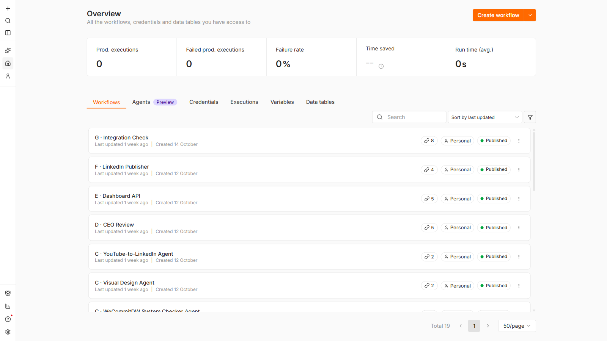
- Đặt tên theo vai trò: A lập kế hoạch, B điều phối, C agent, D review, E API, F LinkedIn, G kiểm tra kết nối.
- Tất cả ở trạng thái Published, nghĩa là webhook và lịch chạy đang hoạt động.
- Không tạo tay: script deploy sinh JSON từ code rồi import.
- Con số 19 trên màn hình gồm thêm 3 workflow thử nghiệm đã gỡ publish.
n8n → Overview → Workflows
n8n · Bản đồ
Workflow "0 · Architecture Overview": bản đồ cả hệ thống
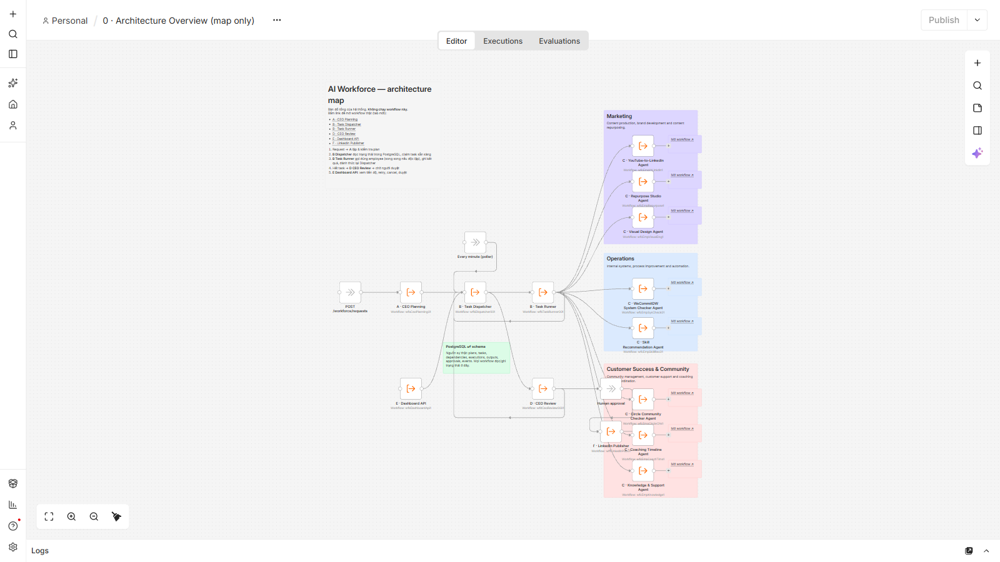
- Một canvas không chạy, chỉ để nhìn: yêu cầu → A → B → C, D, E, F.
- Ba khung màu là ba phòng ban với agent của từng phòng.
- Mỗi khối là link mở thẳng workflow thật.
workflow wf0Architecture1
n8n · Workflow A
CEO Planning: từ câu yêu cầu thành kế hoạch
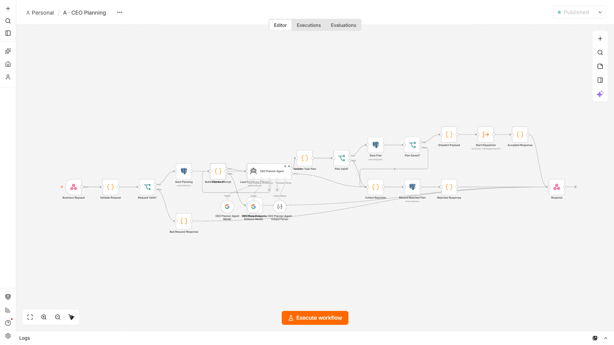
- Business Request (webhook) → kiểm tra yêu cầu.
- Start Planning ghi trạng thái "đang lập kế hoạch" vào DB.
- CEO Planner Agent với 2 model Gemini (chính + dự phòng) và Output Parser bắt buộc trả JSON đúng schema.
- Validate Task Plan kiểm tra agent, phụ thuộc, vòng lặp; sai thì Record Rejected Plan.
- Hợp lệ → Save Plan → Start Dispatcher.
n8n · Workflow B
Task Dispatcher: chia việc từ hàng đợi
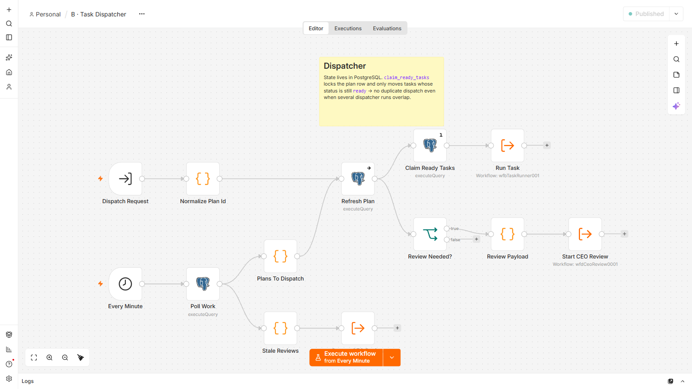
- Hai cách kích hoạt: Dispatch Request (được đánh thức) và Every Minute (lưới an toàn).
- Refresh Plan → Claim Ready Tasks: PostgreSQL khoá và nhận task sẵn sàng, không bao giờ trùng.
- Run Task gọi Task Runner kiểu fire-and-forget nên task chạy song song thật.
- Đủ điều kiện thì Start CEO Review.
n8n · Workflow B
Task Runner: chạy đúng một task và ghi kết quả
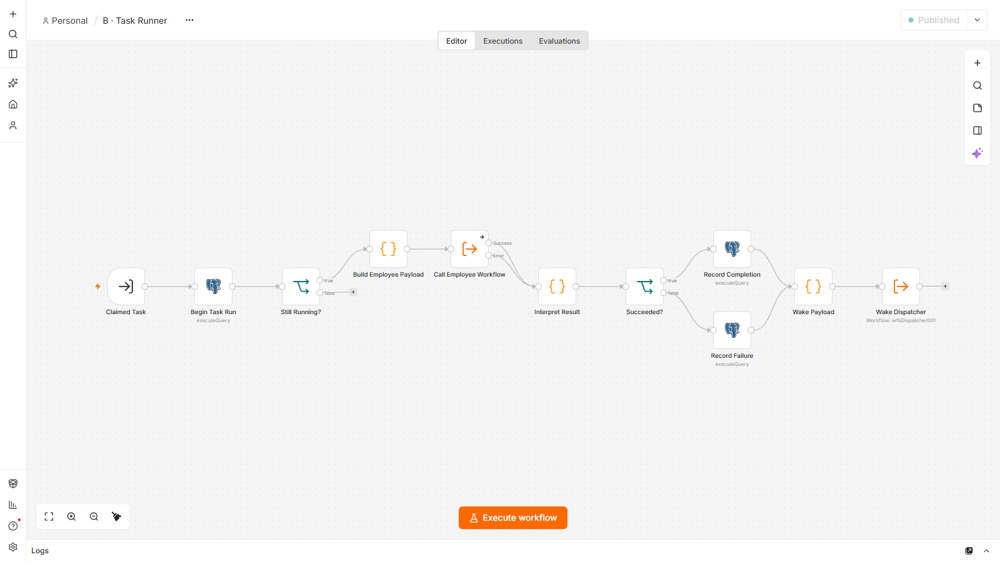
- Begin Task Run tạo một lần thực thi trong DB.
- Call Employee Workflow gọi workflow của agent được giao.
- Succeeded? → Record Completion hoặc Record Failure (DB quyết định có thử lại không).
- Wake Dispatcher để chạy ngay task tiếp theo.
n8n · Workflow C · Agent 1/8 · Marketing
YouTube-to-LinkedIn: xem video, viết bài
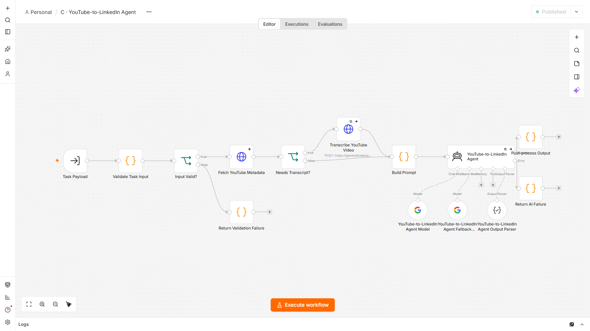
- Khuôn chung của mọi agent: Validate Task Input → công cụ → Build Prompt → AI Agent → Post-process.
- Fetch YouTube Metadata lấy tiêu đề thật; Transcribe YouTube Video nhờ Gemini xem video khi chưa có transcript.
- Lỗi đầu vào hoặc lỗi AI trả về kết quả "failed" rõ ràng.
n8n · Workflow C · Agent 2/8 · Marketing
Repurpose Studio: một nguồn, nhiều định dạng
- Khuôn cơ bản nhất: Validate Task Input → Repurpose Studio Agent → Post-process Output.
- Đầu vào là nội dung nguồn hoặc kết quả của bước trước (ví dụ bài LinkedIn vừa viết), Task Runner tự chuyển sang.
- Trả về nhiều bản: kịch bản video ngắn, tóm tắt, outline…, giữ chung một thông điệp.
n8n · Workflow C · Agent 3/8 · Marketing
Visual Design: vẽ ảnh thật
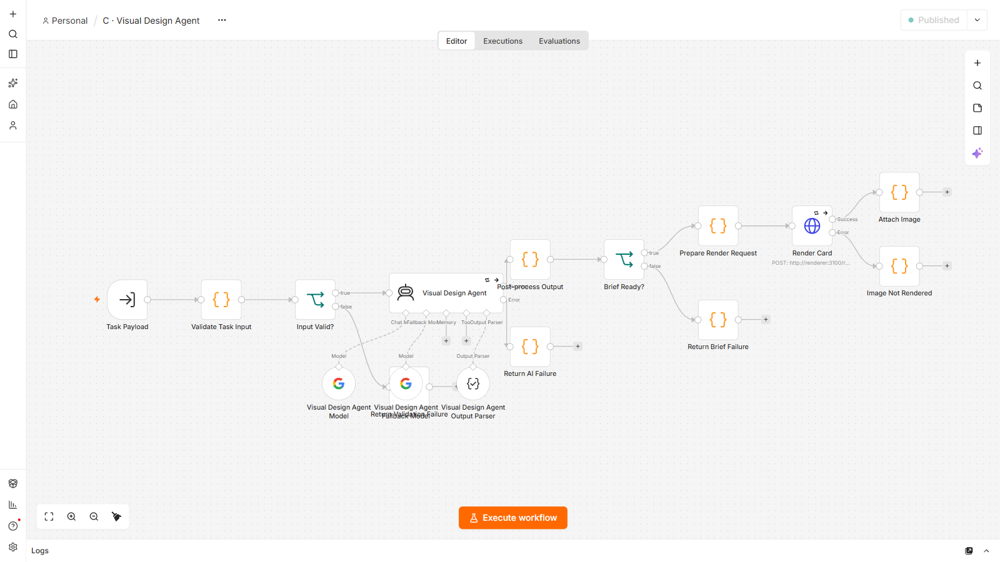
- Visual Design Agent viết spec thẻ ảnh từ nội dung nguồn.
- Render Card gọi service nội bộ
wf-renderer để vẽ PNG phong cách phác tay.
- Vẽ được thì Attach Image; lỗi thì Image Not Rendered báo rõ.
n8n · Workflow C · Agent 4/8 · Vận hành
WeCommitDW System Checker: đọc log, tìm rủi ro
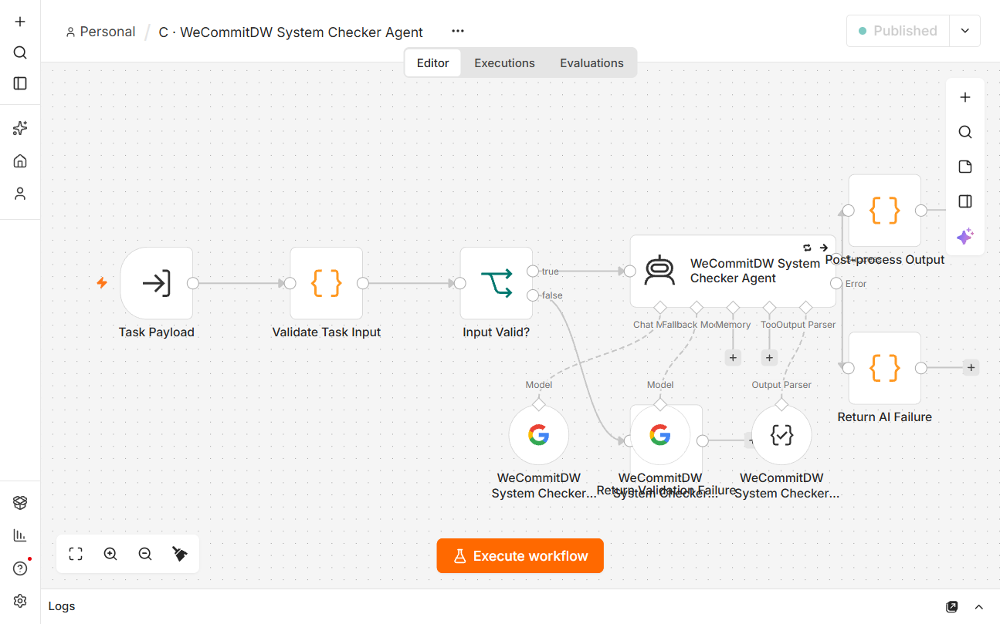
- Validate Task Input bắt buộc phải có dữ liệu hệ thống (log, báo cáo); thiếu thì Return Validation Failure, không đoán mò.
- Post-process Output đối chiếu từng trích dẫn với dữ liệu gốc và gắn cờ
evidence_verified.
- Mỗi phát hiện có mức độ nghiêm trọng và cách khắc phục.
n8n · Workflow C · Agent 5/8 · Vận hành
Skill Recommendation: đề xuất đúng người
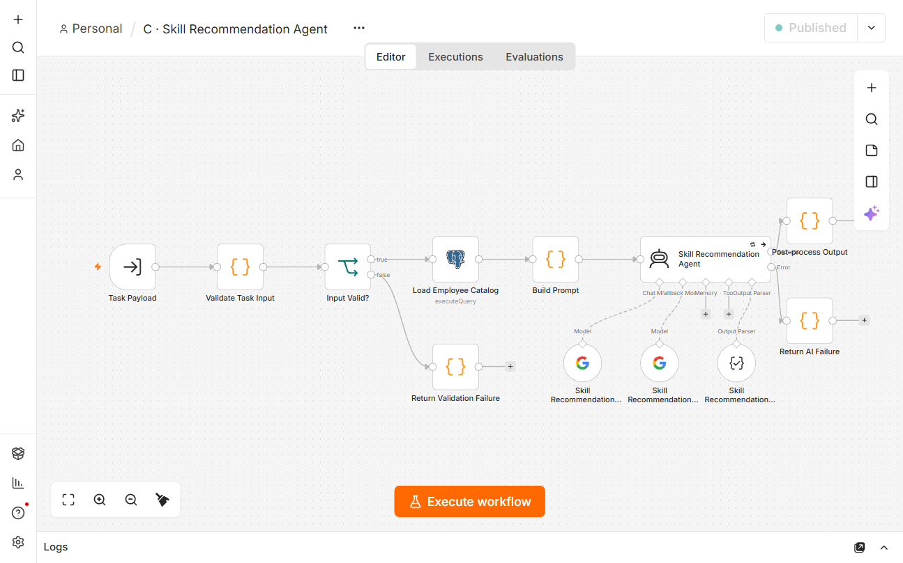
- Load Employee Catalog đọc danh mục 8 agent và skill thật từ PostgreSQL.
- Build Prompt đưa danh mục vào cho AI chọn.
- Post-process Output loại agent hoặc skill không có trong danh mục, ghi vào "khoảng trống năng lực".
n8n · Workflow C · Agent 6/8 · CSKH & Cộng đồng
Circle Community Checker: soát cộng đồng
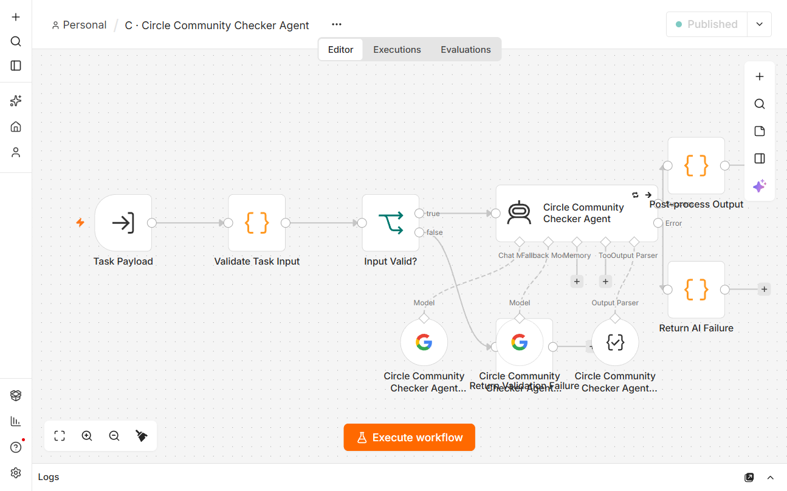
- Nhận các thread được dán vào; phân loại, xếp ưu tiên.
- Soạn trả lời nháp (không tự đăng) và đánh dấu việc cần chuyển người, như tranh chấp thanh toán.
- Bước tiếp theo khi có token: thêm node đọc Circle Admin API trước Validate Task Input.
n8n · Workflow C · Agent 7/8 · CSKH & Cộng đồng
Coaching Timeline: chương và highlight
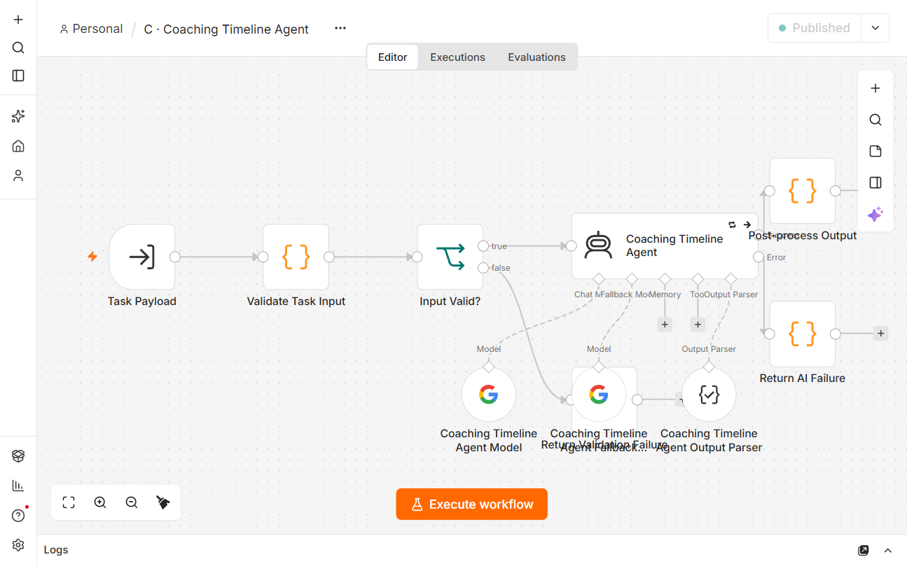
- Validate Task Input yêu cầu transcript có mốc giờ.
- AI chia chương, chọn đoạn highlight, ghi chú cho người dựng video.
- Post-process Output loại mọi mốc giờ không có trong transcript.
n8n · Workflow C · Agent 8/8 · CSKH & Cộng đồng
Knowledge & Support: trả lời có nguồn
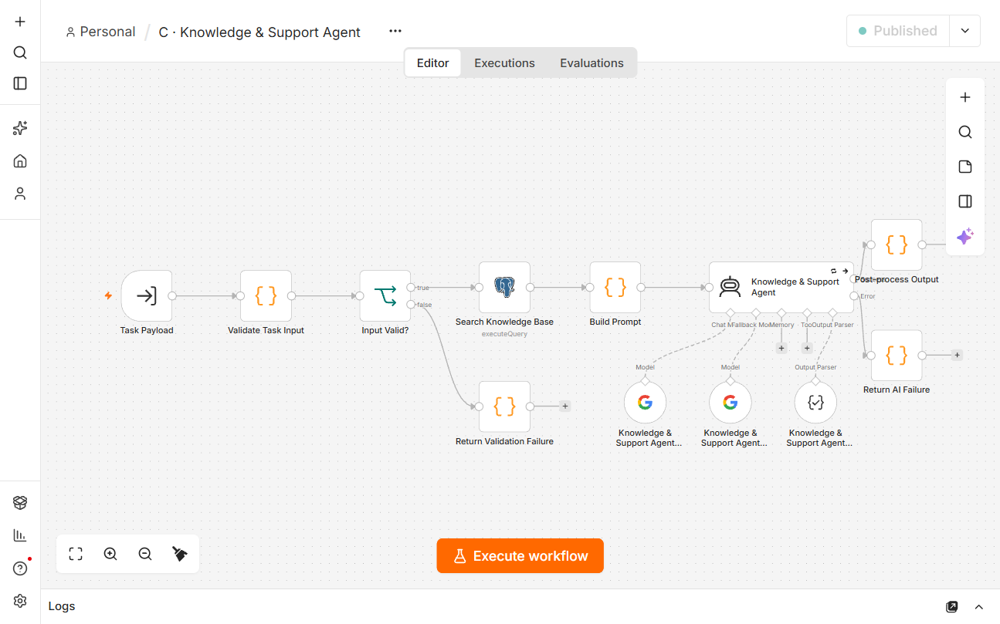
- Search Knowledge Base tìm full-text trong các bài viết đã duyệt (PostgreSQL).
- AI chỉ trả lời từ nguồn tìm được và trích nguồn.
- Không có nguồn → chuyển người xử lý thay vì đoán. Kho tri thức hiện đang trống nên luôn chuyển.
n8n · Workflow D
CEO Review: nghiệm thu trước khi trình người duyệt
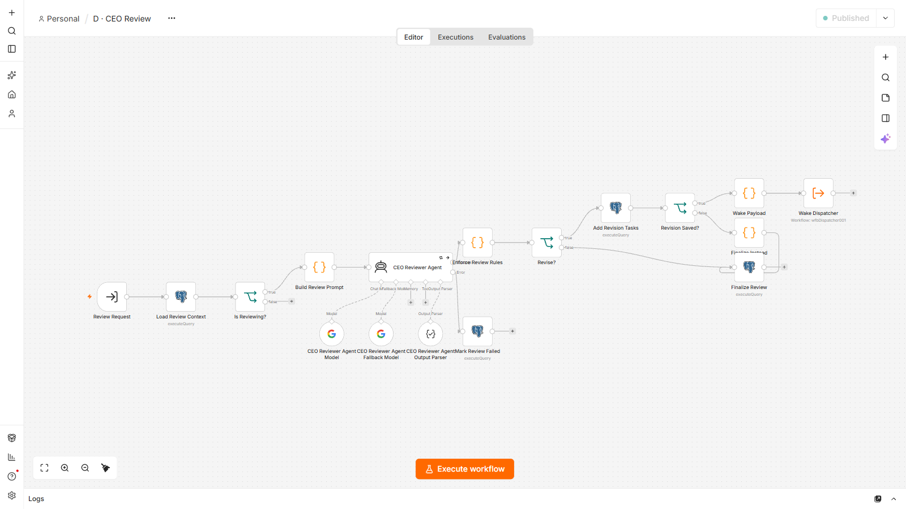
- Load Review Context nạp kết quả mọi task.
- CEO Reviewer Agent chấm theo tiêu chí nghiệm thu; Enforce Review Rules giới hạn số vòng sửa.
- Revise? → Add Revision Tasks (chạy lại) hoặc Finalize Review (chờ người duyệt).
n8n · Workflow E
Dashboard API: 18 webhook phục vụ giao diện
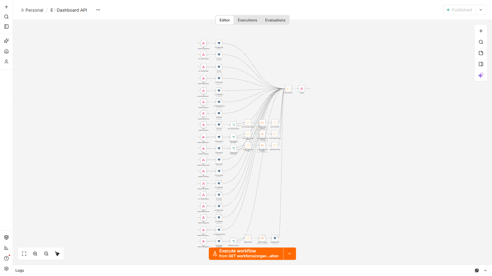
- Mỗi hàng là một endpoint: webhook có khoá → một câu
wf.api(...).
- Tất cả gom về Shape Response → Respond, trả JSON thống nhất
{ ok, data, error }.
- Retry và duyệt có nhánh phụ để đánh thức dispatcher.
n8n · Workflow F
LinkedIn Publisher: đăng đúng bản đã duyệt
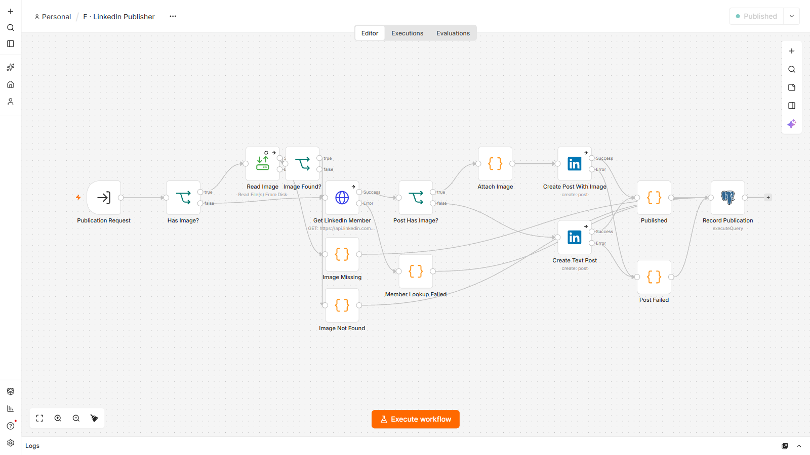
- Has Image? → Read Image từ ổ đĩa; thiếu file thì dừng và báo lỗi.
- Get LinkedIn Member lấy tài khoản đã kết nối.
- Create Post With Image hoặc Create Text Post, rồi Record Publication ghi link bài hoặc lỗi.
n8n · Workflow G
Integration Check: thử kết nối tài khoản ngoài
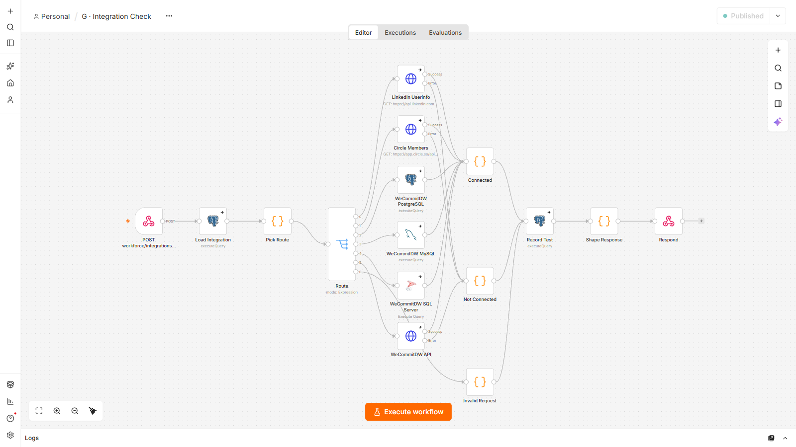
- Route chọn đúng một nhánh: LinkedIn, Circle, PostgreSQL, MySQL, SQL Server hoặc HTTP API.
- Mỗi nhánh chỉ gọi một lệnh đọc.
- Connected / Not Connected giải thích nguyên nhân, Record Test lưu kết quả cho trang Kết nối.
n8n · Vận hành
Lịch sử chạy: dispatcher tự kiểm tra mỗi phút
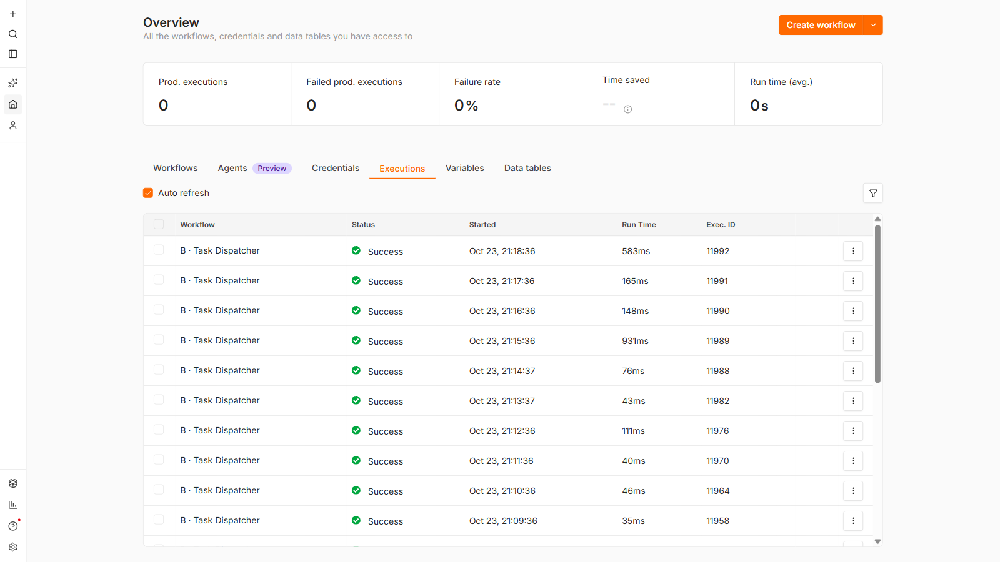
- Mỗi phút B · Task Dispatcher chạy một lần để nhặt việc bị lỡ và execution bị kẹt.
- Mỗi lần chỉ mất vài chục mili giây khi không có việc.
- Khi có yêu cầu, các workflow A, B, C, D xuất hiện ở đây kèm trạng thái từng lần chạy.
n8n → Overview → Executions
Đội ngũ AI
8 agent, nguyên tắc chung: không bịa
📣 Marketing
YouTube-to-LinkedIn: xem video, viết bài ≤ 3.000 ký tự
Repurpose Studio: kịch bản video, tóm tắt, outline
Visual Design: thẻ ảnh phác tay PNG, chỉ dùng ý từ nguồn
⚙️ Vận hành
WeCommitDW Checker: lỗi và rủi ro từ log, mỗi phát hiện kèm trích dẫn đã đối chiếu
Skill Recommendation: đề xuất agent và skill, chỉ chọn trong danh mục thật
💬 CSKH & Cộng đồng
Circle Checker: phân loại thread, trả lời nháp
Coaching Timeline: chương và highlight, loại mốc giờ không có thật
Knowledge & Support: không có nguồn thì chuyển người
5 kịch bản demo gửi CEO (dữ liệu dán trong câu lệnh) đều được giao đúng agent và chạy xong.
Frontend · Dashboard
Một trang điều hành cho CEO và từng phòng ban
🏠 Điều hành
Ô giao việc kèm tài liệu, banner "CEO đang lập kế hoạch" giữ qua F5, khu chờ duyệt, tiến độ kế hoạch, thẻ từng agent với đồng hồ, hàng chờ, lỗi + Thử lại, ô "Giao lại".
📚 Thư viện nội dung
Mọi kết quả theo phòng ban; lọc, tìm, đánh dấu Mới → Đã dùng → Lưu trữ; xem dễ đọc, sao chép, tải .md, tải ảnh.
🗂️ Kế hoạch & LinkedIn
Các bước, báo cáo CEO, duyệt/từ chối, xem trước bài LinkedIn đúng chữ và ảnh sẽ đăng.
⚙️ Kết nối & tài khoản
Nhập LinkedIn, Circle, WeCommitDW ngay trên app, kèm nút Kiểm tra kết nối gọi thật.
Không framework, không build. Server Node giữ API key phía máy chủ và chỉ cho đi qua danh sách endpoint cho phép.
Tích hợp
Ba dịch vụ chạy thật, ba dịch vụ chờ tài khoản
| Dịch vụ | Trạng thái | Ghi chú |
|---|
| Gemini | Chạy thật | Gói miễn phí: dùng model lite, có model dự phòng |
| YouTube | Chạy thật | oEmbed + Gemini xem video công khai |
| Vẽ ảnh | Chạy thật | Service nội bộ, không cần AI tạo ảnh |
| LinkedIn | Chờ app + Connect | Chỉ đăng bài đã duyệt, một lần mỗi kế hoạch |
| Circle | Chờ token | Đã gọi thử Admin API v2 thật (401 khi chưa có token) |
| WeCommitDW | Chờ kết nối | PostgreSQL / MySQL / SQL Server / HTTP API, chỉ đọc |
Bảo mật
Bí mật chỉ nằm trong kho credential mã hoá của n8n
- Token và mật khẩu nhập trên app được ghi thẳng vào n8n, không bao giờ hiển thị lại và không lưu trong database.
- Database từ chối mọi trường lạ, nên mật khẩu gõ nhầm ô không thể lọt vào.
- Mọi webhook có khoá
X-API-Key; trình duyệt không bao giờ thấy khoá.
- Mọi cổng chỉ mở trên
127.0.0.1; kiểm tra kết nối chỉ đọc.
- Không tự đăng ra ngoài: LinkedIn cần duyệt + xác nhận; trả lời khách chỉ là bản nháp.
- Còn thiếu: đăng nhập và phân quyền theo phòng ban cho dashboard.
Chất lượng
Đã kiểm thử ở mọi tầng
14
kịch bản máy trạng thái DB0
lần chạy trùng khi 8 phiên tranh 6 task20/20
test logic node Code8/8
agent chạy thật trên Gemini
- 5/5 yêu cầu demo gửi CEO được giao đúng agent.
- Test thư viện và cài đặt kết nối; thử tay trên trình duyệt không lỗi JS.
- Tắt database: API trả 503 có giải thích và tự hồi phục khi DB chạy lại.
Vận hành
Một lệnh để chạy, một lệnh để deploy
| Container | Cổng |
|---|
| n8n | 5678 |
| wf-postgres | 5433 |
| wf-dashboard | 3000 |
| wf-renderer | nội bộ |
deploy-workforce.ps1
1. Sinh workflow + seed tổ chức
2. Áp SQL theo thứ tự (idempotent)
3. Tạo credential giữ chỗ, không ghi đè cái đã nhập
4. Import + publish (retry 3 lần)
5. Restart n8n, chờ sẵn sàng
Chạy local nên không tốn phí cloud. Lưu ý máy: giữ ổ C trống trên 10 GB để Docker khởi động ổn định.
Tiếp theo
Lõi đã chạy ổn, còn lại chủ yếu là tài khoản và quyết định
Hạn chế hiện tại
• Gemini gói miễn phí, đôi khi 503
• Kho tri thức còn trống
• Dashboard chưa có đăng nhập
• Huỷ kế hoạch không dừng execution đang chạy
• Chưa sửa nội dung trong thư viện
Bước tiếp theo
• Kết nối LinkedIn và đăng thử bài thật
• Nhập Circle + WeCommitDW, cho agent đọc dữ liệu thật
• Nạp tài liệu chính sách, FAQ vào kho tri thức
• Thay Gemini key, cân nhắc bật billing
• Thêm đăng nhập và phân quyền theo phòng ban
Phần cuối · khoảng 12 phút
Demo trực tiếp
- 1. CEO giao việc cho 3 agent (YouTube → LinkedIn → video, ảnh)
- 2. Phòng Vận hành kiểm tra log hệ thống
- 3. Hỏi CEO "ai nên làm việc này"
- 4. Xem kết quả và duyệt
- 5. Thư viện nội dung và Kết nối tài khoản
- 6. Hậu trường trong n8n
- Nguyên tắc: gửi việc chạy lâu trước, trình bày trong lúc chờ.
Demo · Chuẩn bị (người trình bày, trước 20 phút)
Checklist trước khi demo
- Ổ C trống trên 10 GB; đóng ChatGPT desktop và tab thừa.
- Mở Docker Desktop →
docker compose up -d.
- Dashboard mở được, cuối trang ghi "Đã kết nối n8n".
- Chạy thử Gemini một lần: ô "Giao lại" của agent Skill Recommendation, chờ thẻ báo "xong".
- Lần đầu thao tác, nhập tên người trình bày khi dashboard hỏi.
- Đăng nhập sẵn n8n ở một tab riêng.
- Bấm Dọn hết ở "Kết quả gần đây" cho màn hình sạch.
- Slide toàn màn hình: phím
F.
Demo 1 · Tab Tổng quan · CEO
CEO giao việc cho nhiều agent ~5 phút · gửi ngay
Dán vào ô giao việc → Gửi
Xem video https://www.youtube.com/watch?v=aircAruvnKk rồi viết một bài LinkedIn bằng tiếng Việt cho quản lý không chuyên kỹ thuật. Từ bài viết đó, chuyển thể thêm thành kịch bản video ngắn và một bản tóm tắt. Đồng thời làm một ảnh phong cách sketch minh hoạ ý chính để đăng kèm bài LinkedIn.
Chỉ cho khán giả
- Banner "CEO đang lập kế hoạch…", ô nhập bị khoá. Bấm F5: banner vẫn còn.
- Sau 20–40 giây: "Đã giao Marketing" với 3 agent.
- YouTube-to-LinkedIn chạy trước; Repurpose và Visual Design chờ bài viết.
- Thẻ agent sáng viền vàng, "Đang suy luận… m:ss".
CEO không tự làm. Nó chọn agent theo kỹ năng và tự biết việc nào phải làm trước.
Demo 2 · Tab Vận hành
Phòng ban chỉ giao việc trong phạm vi 1–2 phút
Dán vào ô giao việc → Gửi
Kiểm tra giúp tôi tình trạng hệ thống WeCommitDW từ log đêm qua, chỉ ra lỗi, rủi ro và cách khắc phục:
02:00 ETL job dw_sales_load started
02:47 ETL job dw_sales_load finished rows=1,204,331 (avg 7 ngày: 1,190,000)
03:00 ETL job dw_customer_sync started
03:00 ERROR dw_customer_sync: connection timeout to crm-replica (attempt 1/3)
03:05 ERROR dw_customer_sync: connection timeout to crm-replica (attempt 2/3)
03:10 dw_customer_sync finished rows=0
Disk usage /data: 91% (threshold 85%)
Backup job: last successful run 2026-10-10
Chỉ cho khán giả
- Header thành "Phòng Vận hành", chỉ còn 2 agent của phòng.
- Phòng lập kế hoạch riêng, không chặn việc CEO đang chạy.
- Việc được giao cho WeCommitDW System Checker.
- Tuỳ chọn: gửi "Viết một bài LinkedIn giới thiệu hệ thống WeCommitDW" → bị từ chối, gợi ý giao Marketing.
Phòng ban không giao được việc cho agent phòng khác, chặn tận ở database.
Demo 3 · Tab Tổng quan · CEO
Hỏi CEO "ai nên làm việc này" ~1 phút
Dán vào ô giao việc → Gửi
Tôi chưa biết nên giao việc này cho ai: cần soát các bình luận khách hàng phàn nàn video bài 5 không phát được trên Safari và soạn câu trả lời. Hãy đề xuất nhân sự và kỹ năng phù hợp, kèm các bước thực hiện.
Chỉ cho khán giả
- CEO giao cho Skill Recommendation, không tự đi làm việc đó.
- Kết quả: agent được đề xuất, kỹ năng, các bước, khoảng trống năng lực.
Agent chỉ đề xuất trong danh mục nhân sự thật; agent hay kỹ năng không tồn tại bị lọc bỏ.
Demo 4 · Kết quả và duyệt
Xem kết quả, CEO báo cáo, người duyệt ~3 phút
Kết quả Demo 2
- "Kết quả gần đây" → Xem kết quả WeCommitDW.
- Mỗi phát hiện có trích dẫn log gốc và dấu "✓ bằng chứng khớp dữ liệu".
Agent không được bịa: mọi trích dẫn được đối chiếu lại với dữ liệu gốc.
Kế hoạch Demo 1 (khi báo "chờ duyệt")
- "Chờ bạn duyệt" → Xem: các bước, Báo cáo của CEO.
- Xem trước bài LinkedIn: đúng chữ và ảnh sẽ đăng.
- Bấm ✓ Duyệt.
- Nút "Đăng lên LinkedIn" hiện ra: không bấm (chưa kết nối LinkedIn).
CEO không tự đánh dấu xong; chỉ người duyệt mới chốt. Đăng LinkedIn đúng bản vừa xem, một lần duy nhất.
Demo 5 · Thư viện và Kết nối
Quản lý nội dung và tài khoản ngay trên app ~1,5 phút
📚 Thư viện nội dung
- Lọc theo agent, trạng thái duyệt; tìm "Safari".
- Mở kết quả Repurpose: nút Sao chép từng phần, Tải .md.
- ✓ Đã dùng một thẻ → F5 → trạng thái còn nguyên.
- Chuyển tab Marketing: chỉ còn nội dung của phòng.
⚙️ Kết nối & tài khoản
- Thẻ LinkedIn, Circle, WeCommitDW có hướng dẫn từng bước.
- Kiểm tra kết nối ở thẻ Circle → lỗi 401 từ máy chủ Circle thật.
Token nhập ở đây đi thẳng vào kho credential mã hoá của n8n, không bao giờ hiện lại.
Demo 6 · Tab n8n
Hậu trường: xem lại đúng lần chạy vừa rồi ~2 phút
- Executions: các lần chạy của Demo 1 nằm trên cùng (A, B, C, D).
- Mở execution C · YouTube-to-LinkedIn Agent → bấm node Transcribe YouTube Video xem transcript Gemini trả về.
- Bấm Post-process Output xem bài viết cuối cùng.
- Mở workflow A · CEO Planning: chỉ CEO Planner Agent, 2 model Gemini và Output Parser.
16 workflow này sinh ra từ code và deploy bằng một lệnh, không ai kéo thả tay.
Nếu n8n không mở được: dùng các slide ảnh chụp n8n ở phần "Triển khai thực tế".
Demo · Dự phòng
Nếu có sự cố khi demo
| Tình huống | Xử lý tại chỗ |
|---|
| Gemini báo 429 / 503 | Bấm ↻ Thử lại một lần (hệ thống cũng tự thử lại). Vẫn lỗi → mở Thư viện, xem kết quả lần chạy trước. |
| YouTube trả rỗng | Hệ thống tự retry, thường lần 2 thành công. Dùng làm ví dụ về retry. |
| Demo 1 quá 8 phút | Làm tiếp Demo 5–6 trong lúc chờ, hoặc mở kế hoạch YouTube cũ từ nút 🕘 Lịch sử. |
| "Không kết nối được database" | docker compose up -d, chờ 20 giây, F5. |
| Docker không lên | wsl --shutdown, mở lại Docker Desktop. Không kịp: trình bày bằng slide ảnh chụp n8n. |
| Lỡ bấm Dừng kế hoạch | Gửi lại câu lệnh; kết quả cũ vẫn ở Thư viện. |
Hỏi đáp · trả lời nhanh
Câu hỏi thường gặp
Agent có bịa không?
Hai lớp chặn: prompt cấm, và code hậu kiểm loại trích dẫn, mốc giờ, agent không có trong nguồn. Không có nguồn thì chuyển người xử lý.
Hai việc chạy trùng?
Không. PostgreSQL khoá dòng, mỗi task chỉ một lần chạy; test 8 phiên tranh 6 task: 0 trùng.
Sập giữa chừng?
Trạng thái nằm trong database; dispatcher mỗi phút nhặt việc kẹt, quá 15 phút thì timeout và thử lại.
Thêm agent mới?
Thêm một module trong workflows/src/employees/ rồi deploy; CEO tự thấy agent mới.
W
Cảm ơn
Hỏi đáp
Dashboard: http://localhost:3000 · n8n: http://localhost:5678